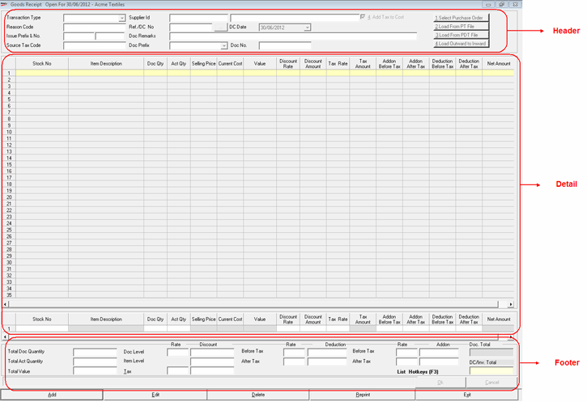

This option is used to add an inwards transaction of goods.
The Goods Receipt window to add a transaction is displayed. The fields displayed are indicative and would depend on the transaction type selected.
The details accepted during goods inward transaction can be grouped as shown.

Click the links to learn more about each group.
Header: The header part of the goods inwards window allows you to accept transaction type. Also, the details like reason code, supplier/ customer Id and name, Ref. / DC. number, prefix & number, Document remarks, source tax code, document prefix and number are accepted in the header part. Apart from this, the header part allows you to load item details from a PT/ PDT file, load from outwards to Inwards.
Note: An additional field Location will be available in the header section when in System Parameter,
Enable Delivery from Remote Location is set to 1-Yes under category Delivery Process.
Location is enabled under category Batch/Grade/Location.
The option Show Item Tag will be displayed if the respective parameter is enabled in System Parameters.
Detail: The detail part of the goods inwards window has item details grid as well as direct entry grid. The direct entry grid is used to accept the details stock no., item description, selling price and quantity and so on, of each item selected for despatch. Once the item details of a stock item is accepted through direct entry grid, the same is displayed in the item details grid.
Note: In case Batch, Grade or Location under category Batch/Grade/Location is enabled then the item details grid and direct entry grid would contain Batch, Grade and Location columns respectively.
Footer: The footer part of the goods inwards window displays the transaction totals like total quantity, total value, item level and document level discounts, total add-ons and deductions before and after tax, the document total and the net total. Apart from the totals, you can access a list of hotkeys applicable.